GATE5 · PART 01 · UNIT 01-01
철도 특성·역할
철도의 일반적 특성 9가지와 시험 함정(기동성·문전서비스) 판별
PART 01 철도공학 개론
★★★ 핵심
§1. 철도의 특징
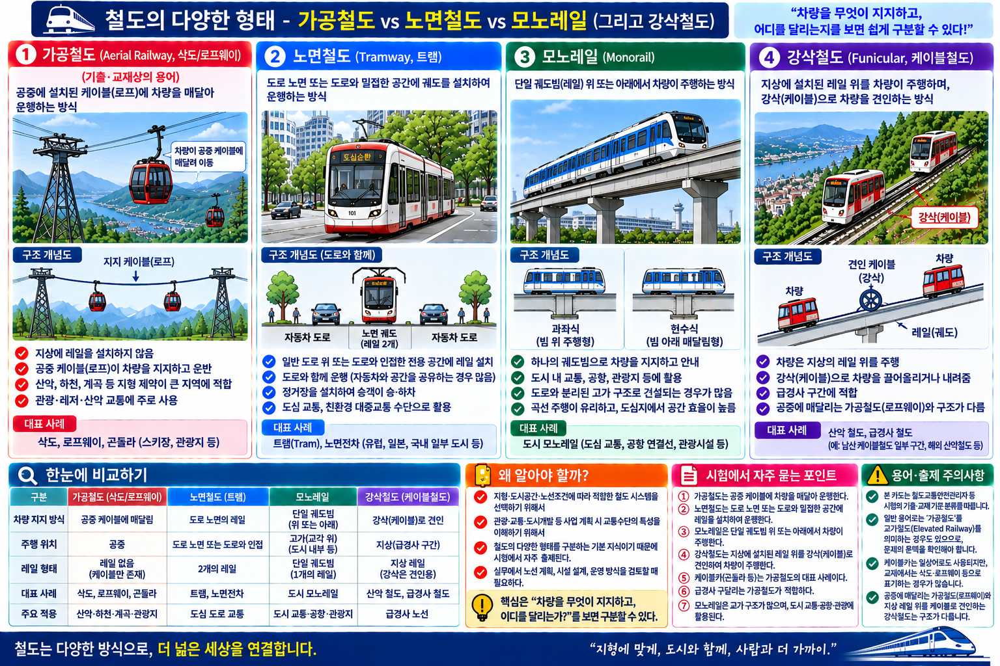
철도는 레일 위를 정해진 경로로 운행하는 교통수단으로, 다음 9가지 특성을 가진다.
시험에서 이 목록에 없는 항목을 "철도의 특징"으로 제시하면 오답 선지다.
신속성
빠른 속도로 이동 가능
신뢰성
정해진 경로·시간표 운행
안정성
레일 유도로 안전한 운행
친환경성
탄소 배출 적음, 전기 운행
경제성
대량 수송 시 단위 비용 낮음
에너지효율성
단위 수송당 에너지 소비 적음
대량수송성
한 번에 많은 승객·화물 수송
장거리성
장거리 수송에 유리
편리성
역 중심의 대중교통 편의
§2. 대표 함정 — 절대 틀리지 않기
❌ 오답 선지 판별
✕철도는 기동성이 우수하다 → 오답
레일이 정해져 있어 자동차처럼 임의 경로 선택 불가. 기동성은 자동차의 특성.
레일이 정해져 있어 자동차처럼 임의 경로 선택 불가. 기동성은 자동차의 특성.
✕철도는 문전(Door-to-door) 서비스가 가능하다 → 오답
역 중심 승하차 → 목적지 문 앞까지 직접 서비스 불가. 문전서비스는 택시·화물차 특성.
역 중심 승하차 → 목적지 문 앞까지 직접 서비스 불가. 문전서비스는 택시·화물차 특성.
○대량수송성·친환경성·에너지효율성 → 모두 정답 선지
§3. 철도왕 보충 4가지
철도왕 교재 p208 대표 특성 4가지
- 정시성 — 시간표대로 정확히 운행
- 고속성 — 빠른 이동 속도
- 친환경성 — 저탄소·전기 운행
- 대량수송성 — 한 번에 다수 수송
※ 전체 9개 특성과 이 4가지는 충돌하는 분류가 아님.
시험 핵심은 기동성 제외가 가장 중요한 판별 포인트.
§4. 핵심암기
📌 암기 공식
철도 = 정해진 선로 위 운행
특징 = 신속·신뢰·안정·친환경·경제·에너지효율·대량수송·장거리·편리
기동성 × 문전서비스 ×
특징 = 신속·신뢰·안정·친환경·경제·에너지효율·대량수송·장거리·편리
기동성 × 문전서비스 ×
§5. 시험포인트
핵심 ①
철도의 특징 목록(9개)에 없는 항목을 "철도의 특징"으로 제시하면 오답.
함정 ①
"기동성이 우수하다" → 자동차의 특성. 철도는 레일에 구속됨 → ✕
함정 ②
"문전에서 문전까지 서비스가 가능하다" → 택시·화물차 특성. 철도는 역 중심 → ✕
핵심 ②
대량수송성이 있다 → ○ | 친환경성·에너지효율성이 있다 → ○
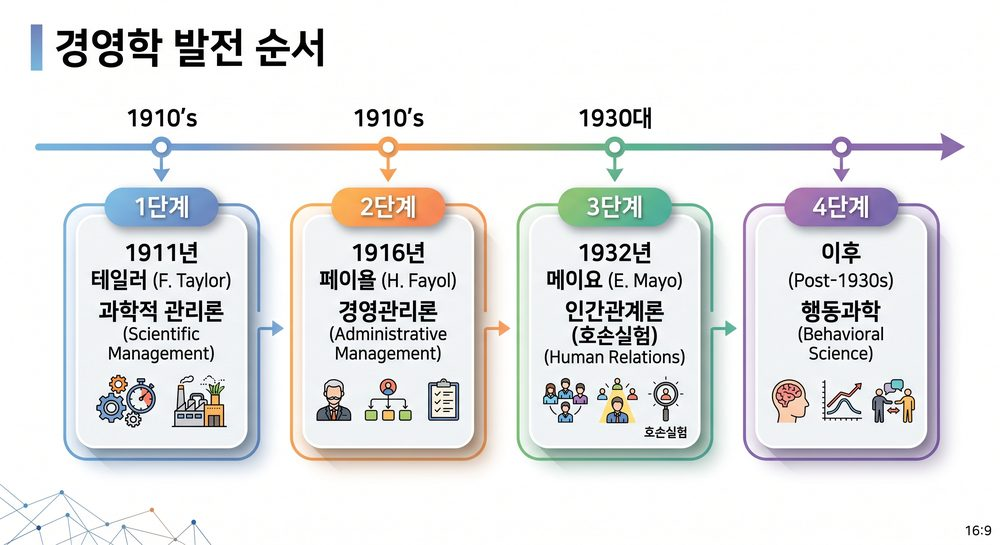
VIS-002 경영학 발전 타임라인
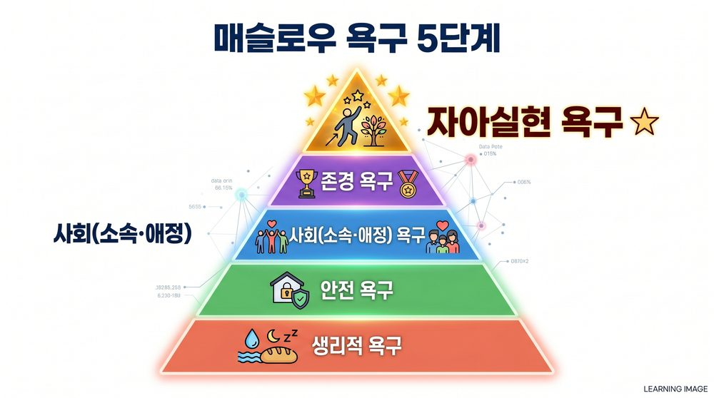
VIS-003 매슬로우 욕구위계 피라미드
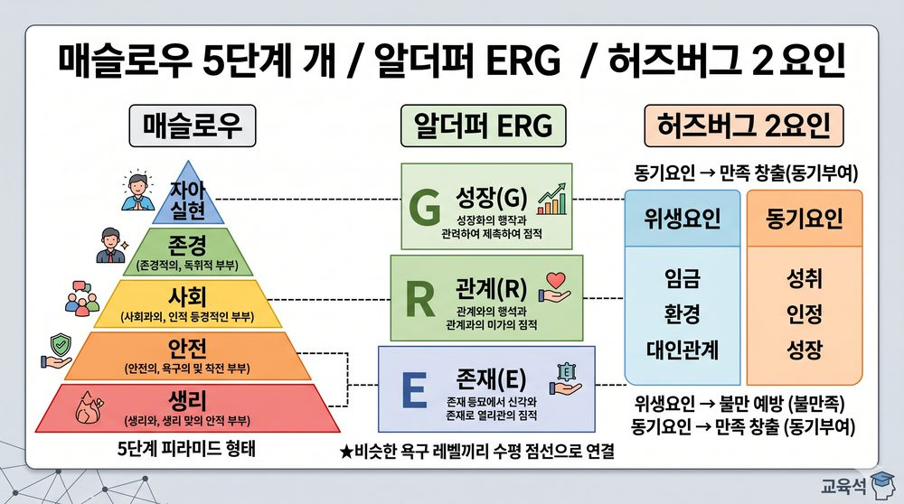
VIS-004 동기이론 3개 비교
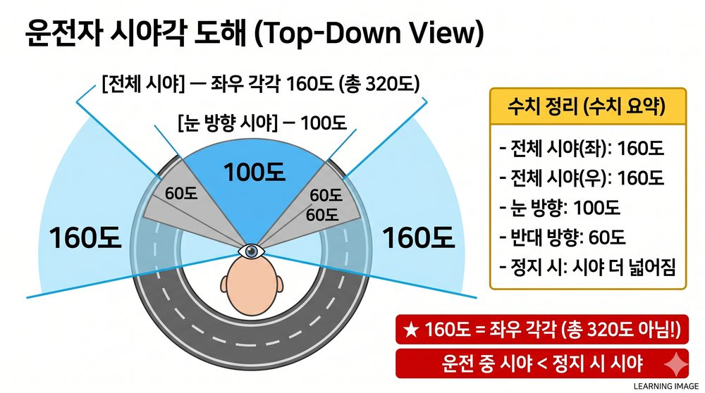
VIS-010 시야각 도해
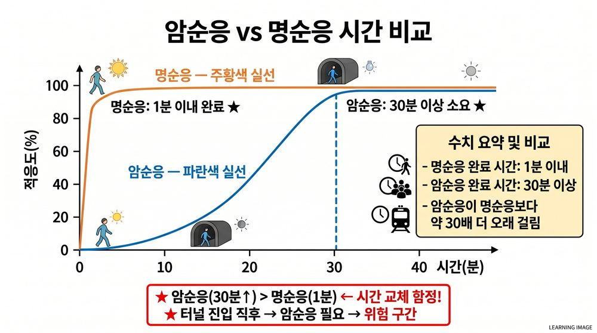
VIS-011 암순응·명순응 그래프
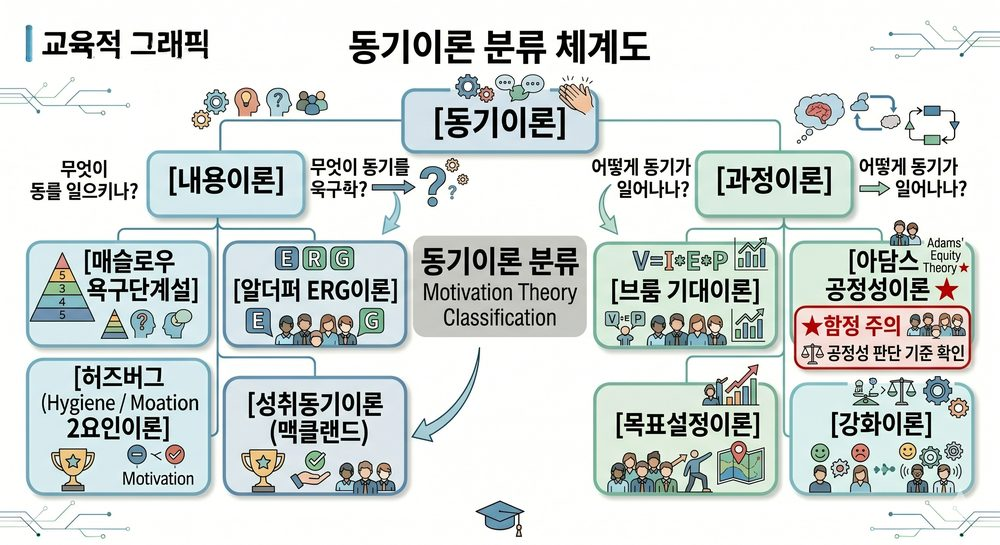
VIS-012 동기이론 분류 체계
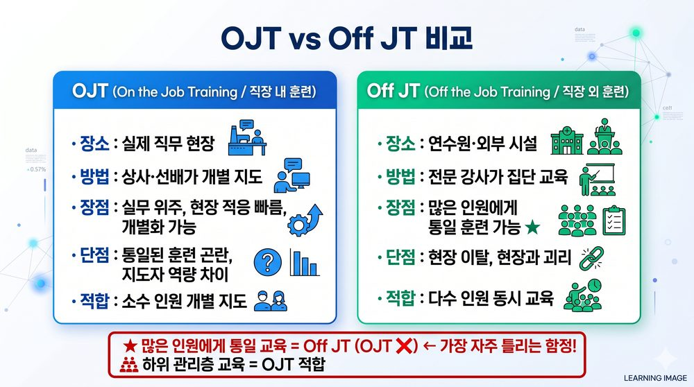
VIS-015 OJT·OffJT 비교
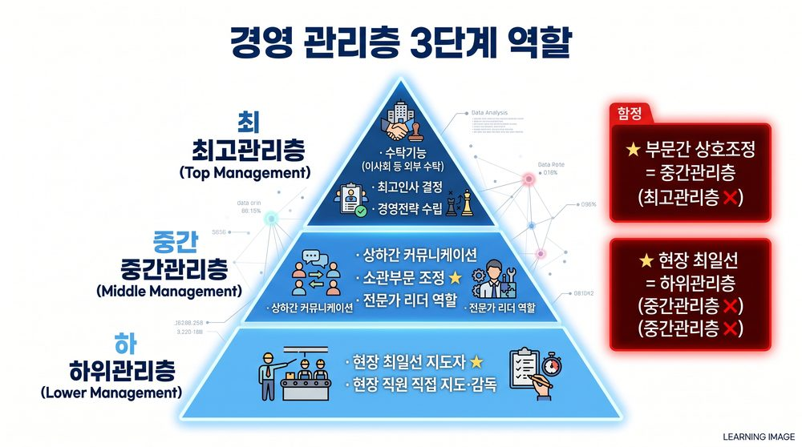
VIS-016 관리층 역할 3단계
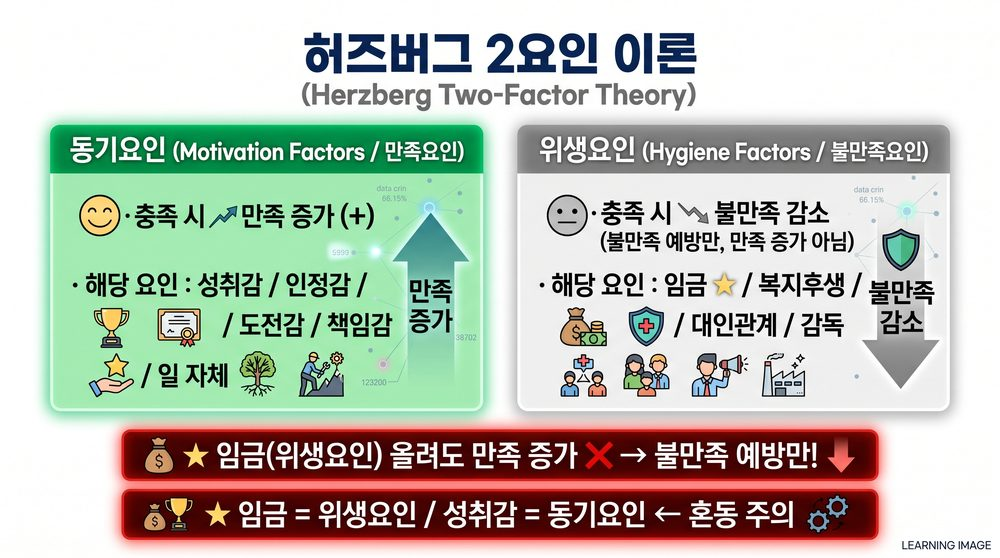
VIS-017 허즈버그 2요인 이론
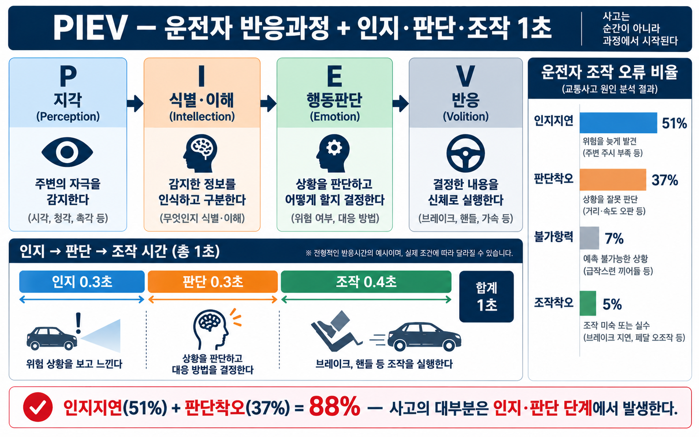
VIS-113 PIEV 반응 과정

철도 역사 3대 연도 타임라인 (SOURCE 01)
§6. 문제 연결
Q1.
철도의 일반적인 특징으로 옳지 않은 것은?
- ① 신속성이 있다.
- ② 대량수송이 가능하다.
- ③ 기동성이 우수하다.
- ④ 친환경적이다.
Q2.
다음 중 철도 교통의 특성으로 옳지 않은 것은?
- ① 에너지 효율성이 높다.
- ② 문전에서 문전까지 서비스가 가능하다.
- ③ 안전성이 높다.
- ④ 장거리 수송에 유리하다.
정답 및 해설
Q1 정답 ③
③ 기동성이 우수하다는 오답이다. 철도는 레일이 고정되어 있어 임의 경로 선택이 불가하다. ①②④(신속성·대량수송성·친환경성)는 모두 철도 특징 목록에 해당한다.
⚠ TRAP: 기동성은 자동차(도로교통)의 특성이다. 철도와 혼동하지 말 것.
Q2 정답 ②
② 문전에서 문전까지 서비스가 가능하다는 오답이다. 철도는 역에서 승하차하므로 출발지·목적지의 문 앞까지 직접 연결이 불가하다. ①③④(에너지효율성·안전성·장거리성)는 철도의 특징에 해당한다.
⚠ TRAP: 문전(Door-to-door) 서비스는 택시·화물차의 특성이다. 철도는 역 중심 교통수단임을 기억할 것.